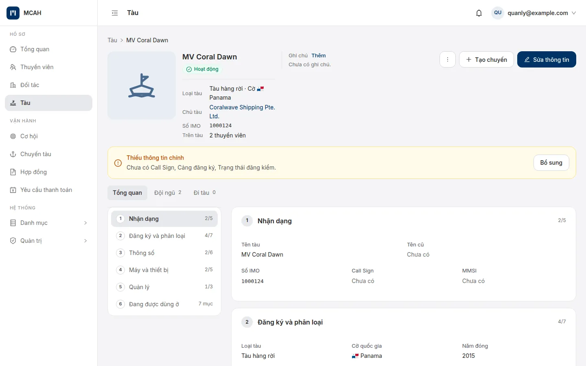

Hồ sơ
Tàu
Thêm tàu, tra tàu theo số IMO.
Hồ sơ từng con tàu: tên, tên cũ, số IMO, Call Sign, MMSI, loại tàu, cờ quốc gia, năm đóng, thông số, máy và thiết bị, chủ tàu và đơn vị quản lý. Tên tàu nên ghi đúng như trên sổ thuyền viên để AI khớp được chuyến đi tàu.

Tra tàu theo số IMO
- Ở form thêm tàu, nhập số IMO (7 chữ số) rồi tra cứu.
- App lấy thông tin tàu từ nguồn bên ngoài và hiện khung Thông tin thông minh: từng trường lấy về đặt cạnh giá trị đang có.
- Ô đang trống được chọn sẵn; ô khác giá trị hiện tại để bạn quyết định. Bấm áp dụng, kiểm tra rồi Thêm tàu.
IMO đã có trong hệ thống thì app báo trùng và mời mở tàu đã có. Tra cứu cần máy chủ đã nối nguồn dữ liệu tàu; nếu nguồn không phản hồi, nhập tay như thường.
Trang tàu có tab Đội ngũ (ai đang ở trên tàu trong khoảng thời gian đang xem) và tab Đi tàu; nút Tạo chuyến ở đầu trang.
ViệcQuyền cần cóThường do
Thêm tàu, tra theo IMOTàu · Thêm tàuMôi giới
Sửa, xoá tàuTàu · Sửa tàu, Xoá tàuMôi giớiQuản trị